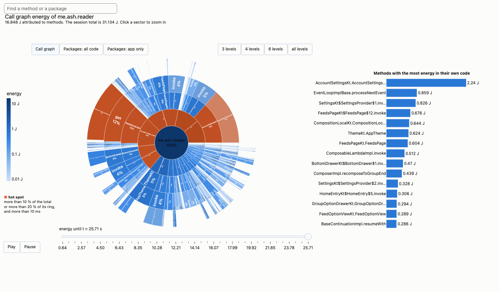

E-MANAFA
Energy Monitor and ANAlyzer For Android. E-MANAFA measures the energy and the memory that
an Android device consumes while an app runs. It needs only an adb connection to the
device: no root access and no external power meter.
It gives:
the energy of a session, for each hardware component (CPU, display, radios, and others);
the system memory during the session;
the energy of each method of the app;
a sunburst diagram of the energy in the call graph, with hot spots.


Where to start
Install the tool and do a first measurement in five minutes. |
|
The workflow, the two sources of energy data, and how a method gets its energy. |
|
One recipe for each scenario: energy, memory, the two together, legacy devices, and more. |
|
Record the methods of an app and get the energy of each one. |
|
Make and read the sunburst diagram. |
|
The files that a session writes, and their fields. |
|
Use E-MANAFA from Python code. |
|
What the numbers mean, measured errors, and limits. |
|
Messages and problems, with their cause and solution. |
|
Reference of the Python modules. |
Publication
Rui Rua and João Saraiva. E-MANAFA: Energy Monitoring and ANAlysis Tool For Android. ASE 2022. https://doi.org/10.1145/3551349.3561342